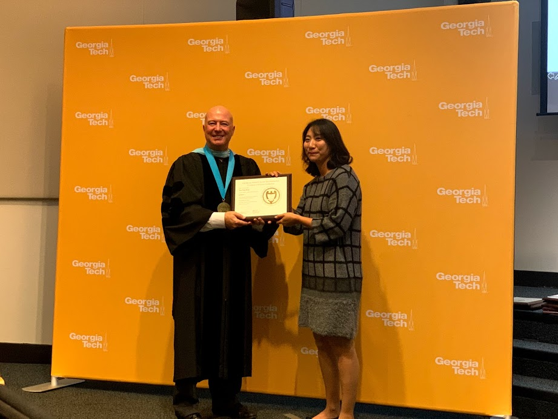

A graphic designer now combining work experience into UI UX design.
A UX UI Designer with a strong background of 9+ years in graphic design providing visual solutions for brands
and
products. Creatively led designs for brands by working on BI, creating package
designs, and developing creative digital/print deliverables. Combining these rich and interactive design
experience into the wide range of learning areas UX UI touches, ready to deeply dive into complex problems and
turn into
simple and pleasant designs for the users.